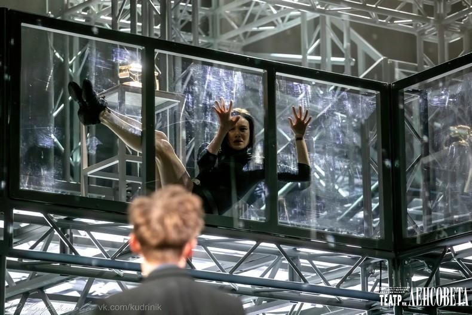

О рождении спектакля «Робот Костя» — первого в России роботического театра, где Чеховские страсти оказались подвластны и роботам.

Далеко не всякий может оказаться предметом искусства. При этом всё настолько зависит от обстоятельств, что при определённом свете им станет любой.
В этом отчасти и есть творчество — в создании трогающих контекстов и созерцательных решений.
Бессмысленно объяснять, что театр давно двинулся в разные стороны, и вы вряд ли удивитесь тому, что Чеховские страсти подвластны и роботам. Пишу это и понимаю, что все определения бесконечно скупы и очень поверхностны.
Конечно, роботы могут всё что угодно, и вскоре они могут заменить и нас. В этом я тоже захотел хоть немного разобраться — и попал в проект, в котором сомневался и боялся существовать.
Пока всё-таки чувствование отличает нас, и «оживить» роботов — задача не из лёгких. Придавать им характер и особенность поведения можно лишь путём поисков новых форм, смыслов, значений.
Мне повезло: люди, которые были рядом, — заряженные люди. Помимо того, что они профессионалы, все очень горели и понимали, что это нам нужно.
При желании можно было развести руками, и тогда всё стало бы потерянным и упущенным. У каждого свои недостатки и достоинства, но всё это удалось вложить — и получился спектакль.
По моим ощущениям он даже замечательный. Изнутри все образы очень играли, и когда пришёл зритель, я одновременно немного завидовал и тем, кто наблюдает, и себе — тому, что я часть этого.
Всё в деталях, и я не понимаю, как бы вообще произошло то, что случилось у нас, в нашей команде. Все наши глаза соединились и стали глазами Робота.
Кстати, его зовут Костя — Костя Треплев. История известна: он любит Нину, она всячески отвергает его ради чего-то эфемерного. Сильное чувство противостоит большой холодности.
Ещё все мы бесконечно пишем в стол, и неизвестно, кто из нас Тригорин, а кто бесславно забыт.
Надо ли объяснять, что мы куда-то двинулись, что-то пытались понять, и этот спектакль однозначно сделал нас другими. Не факт, что роботы до конца поняли нас, а мы — этих странных, но близких нам «нечеловеческих агентов».
Так что история продолжается, но всё идёт по кругу. Осталось лишь расставить акценты.